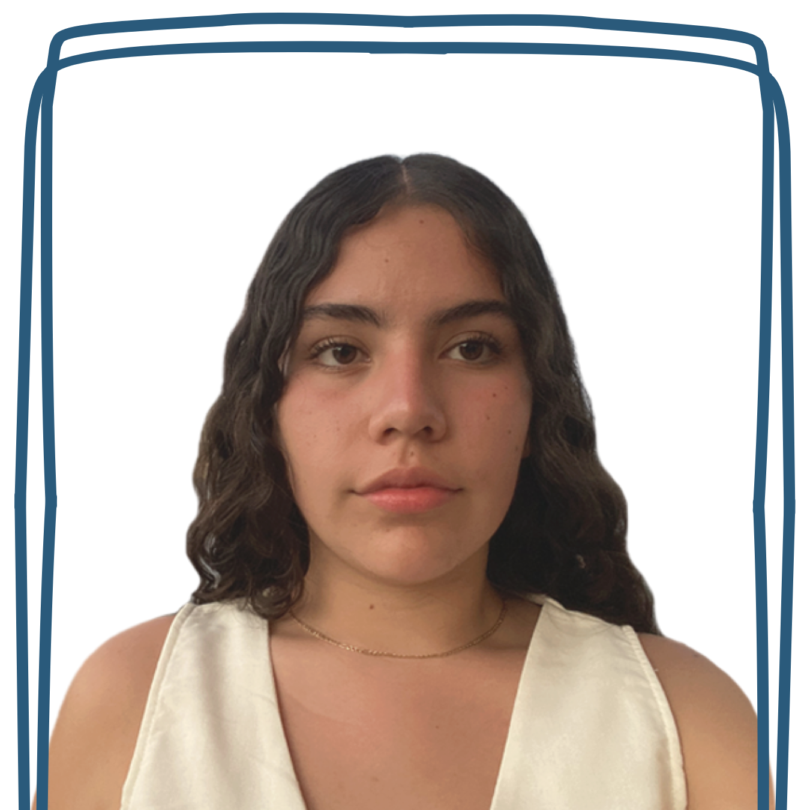

Suri
La guía cultural y artística
Es la experta en historia, arte y tradiciones locales.
Si quieren conocer los secretos del centro histórico,
los mejores spots para fotos en el Malecón, y
entender el corazón de Vallarta, ¡síganla!
Siempre tiene una historia interesante y sabe
dónde encontrar los mejores souvenirs auténticos.
|
Hania
La guía aventurera y amante de la naturaleza
Con Hania al frente, prepárense para
explorar selvas, playas escondidas y miradores
increíbles. Ella conoce cada rincón verde de
Vallarta y les enseñará a conectarse con la
naturaleza (y a tomarse las mejores selfies
en el camino). ¡Aventura garantizada!
|